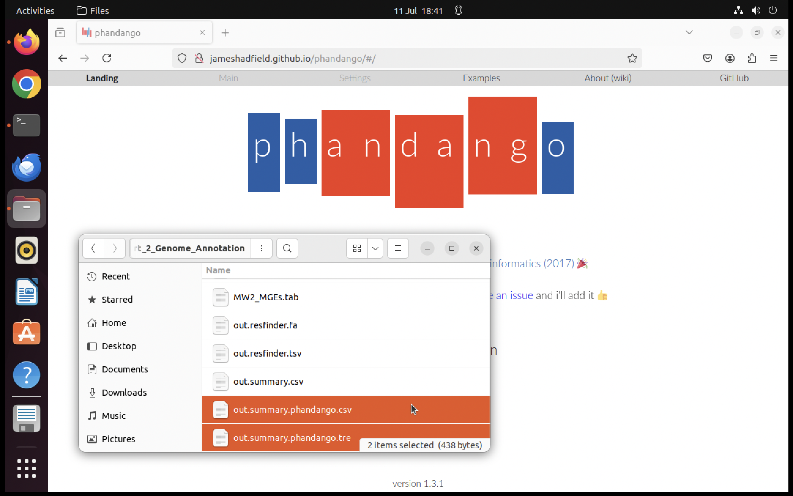
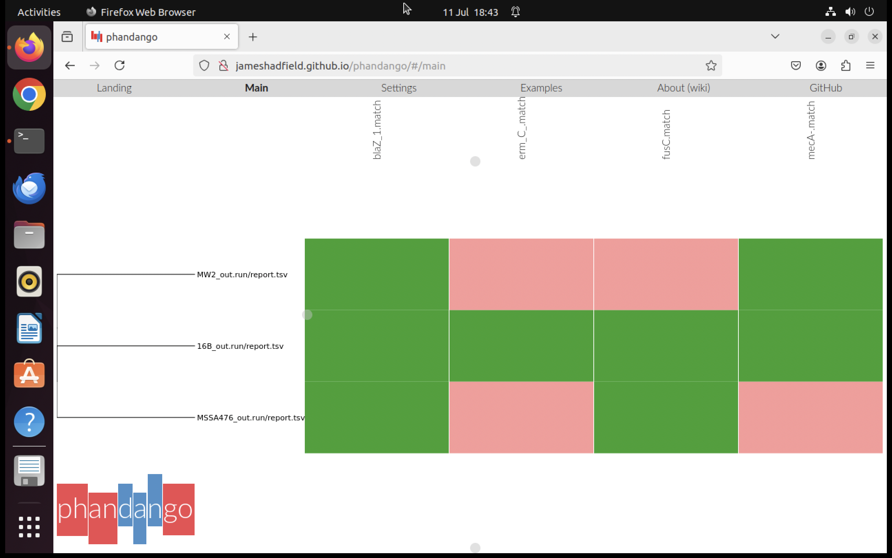

AMR-detection
Module Overview and Aims
Adapted from training materials by Mat Beale, Genome Assembly and Analysis - Costa Rica 2025 course
One of the greatest challenges of sequencing a genome is determining how to arrange sequencing reads into chromosomes and plasmids. This process of determining how the reads fit together by looking for overlaps between them is called genome assembly. In this module, we are going to explore genome assembly using short- and long-read sequencing technologies and see how they can be used to characterize isolates of interest. Additionally, we will annotate these genomes and use comparative genomics to analyze regions of difference and identify genetic determinants of antibiotic resistance.
Aims of this exercise:
- Use a resistome prediction tool to identify the genetic determinants for antibiotic resistance from sequencing reads.
- Show how short-read data can be assembled into a draft genome.
- Order the draft genome against a reference sequence.
- Annotate the reordered draft genome.
- Demonstrate how comparative genomics can identify and analyse regions of difference that distinguish genomes.
- Identify the genetic basis of resistance and explain the evolution of resistance in the isolates investigated.
Background
Staphylococcus aureus is a bacterial pathogen that has gained attention in recent years due to its capacity to evolve into highly virulent and antibiotic-resistant strains. Its prevalence in hospital settings poses a significant burden on healthcare systems worldwide, being the leading cause of hospital-acquired infections. The rise of antibiotic resistance among S. aureus strains, particularly to β-lactam antibiotics like methicillin, has reached alarming levels in regions such as Europe, the US, and Japan, where 40-60% of hospital-acquired S. aureus infections are now methicillin-resistant. The emergence of methicillin-resistant S. aureus (MRSA) dates back to the 1960s, and since then, various successful clones have disseminated globally.
An outbreak sample
In this module, we will assemble the genome of a strain of Staphylococcus aureus, which was sequenced as part of an MRSA outbreak investigation (Köser et al., 2012, N Engl J Med. 366:2267-75). Through multilocus sequence typing (MLST), the isolate was identified as belonging to sequence type 1 (ST1), a lineage of S. aureus more frequently associated with community infections rather than hospital-acquired infections. ST1 strains typically exhibit lower antibiotic resistance compared to those commonly found in hospitals.
Analyses
We will conduct a comprehensive analysis starting with querying the resistome of against a resistance gene database. Additionally, we will perform genome assembly and comparative analysis against the chromosomes of two other ST1 isolates: MSSA476, isolated in the UK (Holden et al., 2004, PNAS. 101:9786-91), and MW2, isolated in the USA (Baba et al., 2002, Lancet 359:1819-27). Both MSSA476 and MW2 have been fully sequenced, annotated, and deposited in ENA, providing valuable reference genomes for our comparative genomic study.
The research questions
The three ST1 isolates are closely related but exhibit different antibiotic resistance profiles:
- 16B is resistant to penicillin, fusidic acid, methicillin and erythromycin
- MSSA476 is resistant to penicillin and fusidic acid
- MW2 is resistant to penicillin and methicillin.
Using a comparative genomic approach we will identify regions of difference, the genetic basis of the antibiotic resistance in , and the genetic mechanisms that drive the evolution of resistance.
Finding the data
The directory contains:
- Three pairs of sequencing reads :
16B_1.fastq,16B_2.fastqMSSA476_1.fastq,MSSA476_2.fastqMW2_1.fastq,MW2_2.fastq
Examining the resistome
Using the genome to predict antibiotic resistance phenotype
One of the benefits of whole genome sequencing bacterial pathogens is that you capture the genomic inventory of the organism. This has been capitalized on in clinical microbiology for the in silico prediction of antibiotic resistance directly from whole genome sequencing data. This is being developed as an alternative to phenotypic sensitivity testing of microorganisms in the laboratory, where microorganisms are routinely sequenced.
For many microorganisms the genetic basis of antibiotic resistance has been extensively studied. This means that the genes responsible for resistance have been identified and sequenced, and can be used to compile a database of resistance determinants and used to query an organism’s genome and define its resistome. Based on the presence or absence of genes or mutations it is possible to make a prediction of the antibiotic sensitives of an organism. For some species of bacteria this works better than others. For example, S. aureus the correlation between the genotype and phenotype for most commonly used antibiotics is above 99%. However, for other organisms, such as members of the Enterobacteriaceae, the concordance is a lot lower, as these organisms have a more extensive array of resistance mechanisms and determinants.
A recent review from a EUCAST subcommittee summarized the current development status of whole genome sequencing for bacterial antimicrobial susceptibility testing (AST) for a range or organisms: Ellington MJ, et al., (2017) The role of whole genome sequencing in antimicrobial susceptibility testing of bacteria: report from the EUCAST Subcommittee. Clin Microbiol Infect. 23:2-22. PubMed PMID: 27890457.
Resistance phenotype of 16B, MW2 and MSSA476
From the phenotypic data you have been given you know that 16B exhibits resistance to penicillin, fusidic acid, methicillin and erythromycin, however you do not know what genes are responsible for this in this isolate. In the first part of this exercise you are going to use a piece of software, ariba, and a publicly available curated antibiotic resistance gene database from ResFinder, to rapidly predict the resistome of 16B from the Illumina sequence reads. You will also do this for this other ST1 S. aureus isolates MW2 and MSSA476, and correlate the phenotypic metadata with the genetic information.
Determining the antibiotic resistance genotype
ariba (Antimicrobial Resistance Identifier by Assembly) is a freely available tool on GitHub. This tool requires a FASTA input of reference sequences, which can be either a multi-FASTA file or a database of antibiotic resistance genes or non-coding sequences. The database serves as one of your inputs, while the other input is paired sequence reads. ariba reports which of the reference sequences were found and provides detailed information on the quality of the assemblies and any variants between the sequencing reads and the reference sequences.
ResFinder is a web resource for the prediction of antibiotic resistance (available at www.genomicepidemiology.org). It utilises a curated database of over 2100 acquired antibiotic resistance determinants (Zankari E, et al., 2012. “Identification of acquired antimicrobial resistance genes.” J Antimicrob Chemother. 67:2640-4).
ariba is installed on the virtual machine. You will use it to download the ResFinder database locally and then use ariba to examine the resistome of your isolates. Further information about ariba can be found in the ariba wiki (Hunt M, et al., 2017. “ariba: rapid antimicrobial resistance genotyping directly from sequencing reads.” Microb Genom. 3:e000131).
The results can then be visualised using Phandango, an interactive web tool for viewing your outputs.
Download the ResFinder database
To download the database you use the ariba getref command.
In the command below we:
- Specify the database to download
resfinder
- Specify the output name prefix
out.resfinder
ariba has been installed using conda. We must activate the relavent conda environment before running any commands using ariba.
conda activate ariba_envNow we can run ariba
ariba getref resfinder out.resfinderAlternative database options that can be used are: card, plasmidfinder, resfinder, vfdb_core, vfdb_full.
Next you need to format the reference database using the ariba prepareref command.
In the command below we:
- Specify the file of resistance genes in fasta format
–f out.resfinder.fa
- Specify the metadata file for the resistance genes
–m out.resfinder.tsv
- Specify directory that will contained the prepared database files for running
aribaout.resfinder.prepareref
ariba prepareref -f out.resfinder.fa -m out.resfinder.tsv out.resfinder.prepareref This command may generate warnings indicating sequences or variants were removed from the database upon formatting. Despite the warnings, the command has ran successfully and you may proceed on to the next step.
Run ariba on 16B
Next using the 16B fastq files run local assemblies and call variants using the ariba run command. As the command is running, identified variants will be printed to screen.
- Specify the directory containing the ResFinder database files
out.resfinder.prepareref
- Specify the 16B forward and reverse fastq files
16B_1.fastq 16B_2.fastq
- Specify the the directory containing the results
16B_out.run
ariba run out.resfinder.prepareref 16B_1.fastq 16B_2.fastq 16B_out.runRun ariba on MW2
Repeat the ariba run on the MW2 fastq files.
- Specify the directory containing the ResFinder database files
out.resfinder.prepareref
- Specify the MW2 forward and reverse fastq files
MW2_1.fastq MW2_2.fastq
- Specify the the directory containing the results
MW2_out.run
ariba run out.resfinder.prepareref MW2_1.fastq MW2_2.fastq MW2_out.runRun ariba on MSSA476
Repeat the ariba run on the MSSA476 fastq files.
- Specify the directory containing the ResFinder database files
out.resfinder.prepareref
- Specify the MSSA476 forward and reverse fastq files
MSSA476_1.fastq MSSA476_2.fastq
- Specify the the directory containing the results
MSSA476_out.run
ariba run out.resfinder.prepareref MSSA476_1.fastq MSSA476_2.fastq MSSA476_out.runCompile the ariba results
Next you need to compile the ariba results from the three isolates using the the ariba summary command.
- Specify the prefix for the output files
out.summary
- Specify the report files made by the separate runs of
aribafor each isolate16B_out.run/report.tsv MW2_out.run/report.tsv MSSA476_out.run/report.tsv
ariba summary out.summary 16B_out.run/report.tsv MW2_out.run/report.tsv MSSA476_out.run/report.tsvWe must now deactivate the ariba conda environment. Failure to deactivate the environment will prevent usage of downstream tools.
conda deactivateVisualize in Phandango
The ariba summary command generates three files. You can see these in your directory with the ls -l command:
out.summary.csv- summary of identifying genes and matches in the isolatesout.summary.phandango.csv- a version of summary file for viewing in Phandangoout.summary.phandango.tre- tree based on matches in the out.summary.csv file
To visualize the results open up the Firefox web browser, and type in the URL: https://jameshadfield.github.io/phandango/
From a file view window drag and drop the two phandango files, out.summary.phandango.tre and out.summary.phandango.csv, into the browser window.


In the browser window the tree is displayed on the left and represents relationships of the isolates based on the shared resistance determinants displayed in the right-hand panel, where the column indicate genes, and the green blocks indicate matches. The pink blocks indicate that the isolates are negative for those genes.
What are the genes identified, and which antibiotics do they encode resistance for? To help you understand what what genes ResFinder is using for different antibiotics you can explore here: https://cge.food.dtu.dk/services/ResFinder/gene_overview.php
How do the resistomes predicted for each isolate compare with the phenotypic data? You can find the resistance phenotypes here: Resistance phenotype of 16B, MW2 and MSSA476
Phandango interpretation:
Tree shows relationships between samples
Colored cells show AMR gene presence
Darker colors = higher confidence matches
White = gene absent
Alternative: AMRFinderPlus